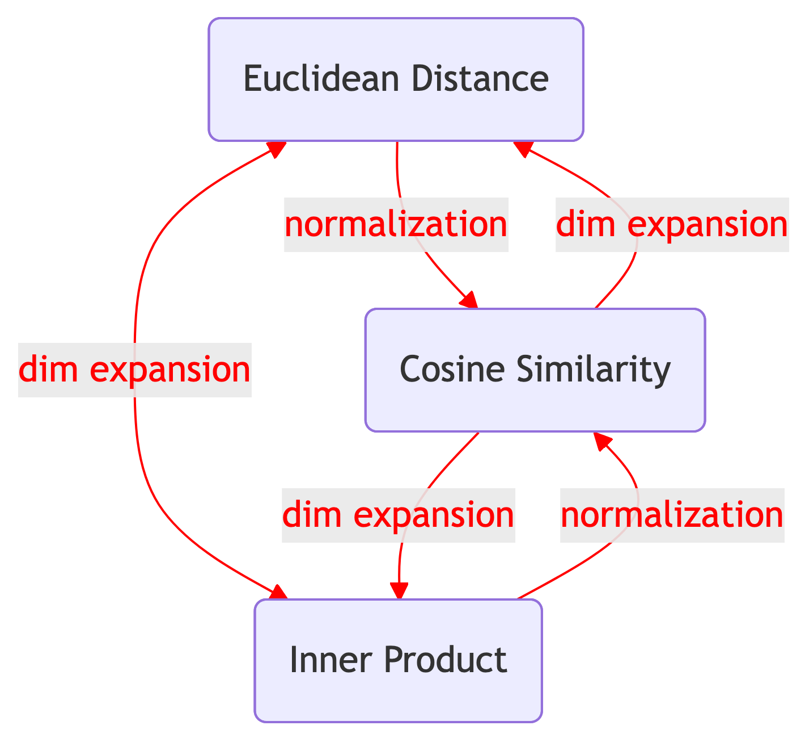

Order-preserving transforms between Euclidean Distance, Inner Product, and Cosine Similarity.
Transform
Metric
Python
Author
Xuefeng Xu
Published
February 22, 2026
Euclidean Distance, Inner Product, and Cosine Similarity are three fundamental measures used in nearest neighbor search. Although they appear different, they are deeply connected. In fact, through simple preprocessing (normalization or dimension expansion), we can transform one metric into another while preserving the ranking of nearest neighbors.
1 Distance Metrics
Let \mathbf{x}, \mathbf{y} \in \mathbb{R}^d be vectors. The three distance metrics are defined as follows:
For Euclidean Distance, smaller values indicate more similar vectors. For Inner Product and Cosine Similarity, larger values indicate more similar vectors. In nearest neighbor search, given a query vector \mathbf{x}, we seek the most similar vector in a database \{\mathbf{y}^{(i)}\}:
Many nearest neighbor search algorithms are optimized for specific metrics. However, different applications may require different similarity measures. Fortunately, these three metrics are connected through order-preserving transformations (Bachrach et al. 2014).
By preprocessing input vectors through normalization or dimension expansion, you can retrieve nearest neighbors for any metric by running an algorithm compute with a different metric. This approach is summarized in Table 1 and Figure 1 (see Table 2 in Douze et al. (2025)).
Table 1: Summary of the transformations.
Compute
Want
Transform
Parameter
IP
CS
Normalize
N/A
ED
CS
Normalize
N/A
CS
IP
Add 1 dim
\alpha
ED
IP
Add 1 dim
\alpha
IP
ED
Add 1 dim
\alpha
CS
ED
Add 2 dims
\alpha,\beta

Figure 1: Demonstration of relationships. Arrows indicate the transformations.
3 Transformation
This section demonstrates how to transform between distance metrics through order-preserving transformations. For each transformation, we provide the mathematical formulation, a proof of correctness, and a Python implementation to verify the results.
We want the ranking results of Cosine Similarity by computing Inner Product. Since Cosine Similarity is Inner Product on normalized vectors, the transformation is simple normalization:
To verify the implementation, we can compare the ranking results of IP on \mathbf{x'} and \mathbf{y'} with the ranking results of CS on \mathbf{x} and \mathbf{y}.
We want the ranking results of Cosine Similarity by computing Euclidean Distance. Similar to the previous case, we can also achieve this through normalization:
We want the ranking results of Inner Product by computing Cosine Similarity. This can be achieved by adding one dimension to the original vectors, where \alpha is a parameter to be determined:
To avoid negative values in the square root, we need to choose \alpha such that:
\begin{gather*}
1-\|\alpha\mathbf{y}^{(i)}\|^2 \ge 0 \text{ for all } i \\
\Downarrow \\
|\alpha| \le \min_i 1/\|\mathbf{y}^{(i)}\|
\end{gather*}
\tag{10}
In fact, we also need \alpha>0 to make sure the transformation is order preserving (detail in the proof). So we choose \alpha to be slightly smaller than \min_i 1/\|\mathbf{y}^{(i)}\|.
Note that \|\mathbf{x}\| and \alpha are constants with respect to i, so they don’t affect the \argmax operation. We then compare the ranking results of CS on \mathbf{x'} and \mathbf{y'} with the ranking results of IP on \mathbf{x} and \mathbf{y}.
We want the ranking results of Inner Product by computing Euclidean Distance. Similar to the previous case, we can also achieve this by adding one dimension to the original vectors:
Removing \|\mathbf{x}\|^2 and \alpha^2 doesn’t affect the operation. Again, we compare the ranking results of ED on \mathbf{x'} and \mathbf{y'} with the ranking results of IP on \mathbf{x} and \mathbf{y}.
We want the ranking results of Euclidean Distance by computing Inner Product. This can also be achieved by adding one dimension to the original vectors:
Similarly, adding \|\mathbf{x}\|^2 doesn’t affect the \argmax operation. We then compare the ranking results of IP on \mathbf{x'} and \mathbf{y'} with the ranking results of ED on \mathbf{x} and \mathbf{y}.
We want the ranking results of Euclidean Distance by computing Cosine Similarity. This can be achieved by adding two dimensions, where \alpha and \beta are parameters to be determined:
To avoid negative values in the square root, we need to choose \beta such that:
\begin{gather*}
1-\beta^2\|\mathbf{y}^{(i)}\|^2-\beta^2\|\mathbf{y}^{(i)}\|^4/\alpha^2\ge 0 \text{ for all } i\\
\Downarrow\\
|\beta|\le \min_i 1/\sqrt{\|\mathbf{y}^{(i)}\|^2+\|\mathbf{y}^{(i)}\|^4/\alpha^2}
\end{gather*}
\tag{18}
Here, we also need \beta>0 to ensure the transformation is order-preserving (see proof). For \alpha, it only requires \alpha\neq 0, so we simply set \alpha=1.
Although these transformations preserve the ranking order of nearest neighbors, the added dimensions are not homogeneous with the original dimensions. This can make some algorithms more difficult, especially vector quantization methods.
In particular, Morozov and Babenko (2018) pointed out the following issue. Suppose we want to use IP as the metric but compute with ED, so database vectors are transformed using Equation 12. Consider two database vectors \mathbf{u} and \mathbf{v}. After transformation, we have:
Assume an algorithm wants to put similar vectors close to each other. Since the algorithm is based on ED, it will try to minimize the Euclidean distance \|\mathbf{u'} - \mathbf{v'}\|. In fact:
However, this is not equivalent to maximizing the inner product \langle\mathbf{u}, \mathbf{v}\rangle alone, since the second term also depends on the vector norms. Vectors with larger norms will have a larger first term but a smaller second term. Consequently, the algorithm will cluster vectors differently in the transformed space compared to the original IP space, potentially leading to suboptimal results.
To illustrate this issue, we compare the ranking results of ED on \mathbf{u'} and \mathbf{v'} with the ranking results of IP on \mathbf{u} and \mathbf{v}. The two ranking results are different.
Douze et al. (2025) suggests several mitigation strategies, including random projection, Principal Component Analysis (PCA), and other transformation techniques applied to the transformed vectors to mitigate these side effects.
References
Bachrach, Yoram, Yehuda Finkelstein, Ran Gilad-Bachrach, et al. 2014. “Speeding up the Xbox Recommender System Using a Euclidean Transformation for Inner-Product Spaces.”Proceedings of the 8th ACM Conference on Recommender Systems (New York, NY, USA), RecSys ’14, 257–64. https://doi.org/10.1145/2645710.2645741.
Morozov, Stanislav, and Artem Babenko. 2018. “Non-Metric Similarity Graphs for Maximum Inner Product Search.”Proceedings of the 32nd International Conference on Neural Information Processing Systems (Red Hook, NY, USA), NIPS’18, 4726–35. http://papers.nips.cc/paper/by-source-2018-2294.